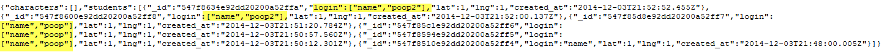
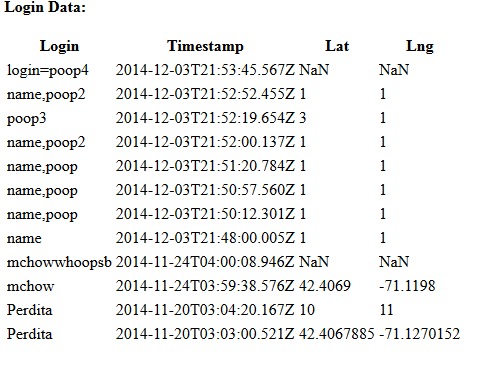

Issue: Fake Login, Duplicate Login, Multiple Entry in Database for Login, Fake Location
- Severity: Low/Medium
- Location: http://whispering-reaches-1894.herokuapp.com/sendLocation
- Description: Users can POST any login they want or even enter the same login multiple times. Users can also enter a fake or inaccurate location.
- Resolution: If user logins are unqiue, then a verification token can be used to make sure the user is who they say they are. Duplicate logins can be avoided by doing a run through the database. Locations can be verified by checking provided location against the location of the IP. Lats and Longs can be verified that they are legitimate values as well.

